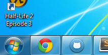
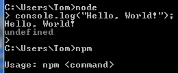
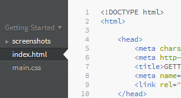
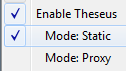
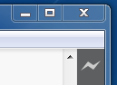
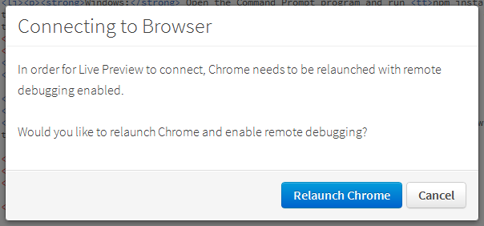

Install all the software described below. Get started learning Node.js with the instructions that follow.
| Software | Installation Instructions | Installation Verification Instructions |
|---|---|---|
|
Windows or OS X |
Use the installation disks that came with your computer to install Windows or OS X. |
You know it worked if:
 |
|
Google Chrome |
You know it worked if:
|
|
|
Node.js |
Use the big install button on their web page to download an installer. |
You know it worked if:
 |
|
Brackets |
Use the big download button on their web page. Download the latest version. This screenshot is old. |
You know it worked if:
 |
|
Theseus |
Theseus:
node-theseus: |
You know it worked if:
|
In Brackets, click the File > Open Folder... menu item and open the node-course directory (the directory containing this file, README.html).
Open the public/tutorial-01.html file in Brackets.
Open the File menu and ensure that Theseus is enabled and in Static mode.

Click the lightning bolt in the upper-right corner of Brackets to Go Live. This will open the current file in Chrome and establish a sweet debugging connection to that page.

Brackets may ask you to relaunch Chrome if it can't establish a connection. You should do what it says.

You can close this tab now.
You run commands in a terminal by typing them and pressing Enter. Here are instructions for opening a terminal.
Launch Terminal.app. The easiest way is to activate Spotlight by clicking the magnifying glass in the upper right corner of the screen (or pressing Apple+Space), typing "terminal", and clicking the first Application result.
Launch cmd. The easiest way is to open the Start menu, typing "cmd" in the search box, and selecting the result for the program cmd.